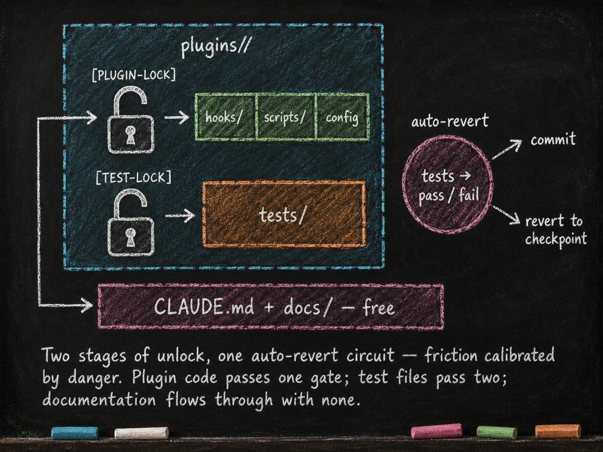

Plugin Edit Safety — plugin_integrity
Essay 5.2 — The Always-On Digital Cortex, Part 2 of 9.
Essay 5.1 introduced two behavioral plugin groups inside an earlier Claude-based prototype. The phase-independent group stays available across the work cycle, but each plugin attaches to particular runtime events rather than every plugin firing on every prompt and tool call. Essays 5.2 through 5.6 inspect those controls one at a time. Treat each deep-dive as a case study: the concern is portable; the mechanism is this prototype’s answer. ⓘ
We open with the control that protects changes to the plugin layer itself. In this prototype, plugin_integrity is the floor.
What it owns
plugin_integrity exists to keep a plugin edit from silently regressing established behavior. It combines a user-gated unlock, a git checkpoint, plugin-scoped tests, a one-plugin-at-a-time boundary, and a deliberate closeout.
The first gate is admission. A [PLUGIN-LOCK] request must name one plugin, provide a structured justification of at least one hundred words, and run inside either gmode or a focused job for which the user has approved plugin-layer work. The same admission rule governs a new plugin’s birth. Once admitted, the mechanism records the current commit as a checkpoint and marks that plugin as the only unlocked plugin. ⓘ
The lock protects the plugin’s executable and machine-managed surfaces: hooks, scripts, existing shell tests, config.conf, and direct access to data.json. Some narrative and coaching surfaces are exempt from the plugin lock — a plugin’s CLAUDE.md, Markdown under docs/, voice.xml, and Markdown agent definitions — because the prototype updates them through other governed flows. They are not globally writable: phase guards and other checks still decide when those edits are allowed. Shared utilities under plugins/lib/ also follow their own boundary. ⓘ
The preferred closeout is explicit. Before switching plugins or making most phase transitions, the agent runs lock-cmd.sh. That script runs every shell test directly inside the unlocked plugin’s tests/ directory. If they pass, it commits any plugin-directory changes and clears the lock. If they fail, it keeps both the working tree and the lock intact so the agent can repair the failure and try again. A plugin with no shell tests can still close, but the script warns that it is locking without verification. ⓘ
That distinction matters because the prototype also has an automatic fallback. When an eligible outside-plugin edit encounters an open lock, safe-lock.sh runs the tests. A pass commits and closes the lock. A failure first attempts a quarantine commit so the work remains recoverable in Git, then restores the plugin directory to the captured checkpoint and records the failed tests and reverted files. Auto-revert is the catch-all backstop, not the normal closeout path. ⓘ
The fuller ceremony extends beyond this one plugin. Essay 5.8 shows how the question registry, historian, job state, and integrity gate compose. The Essay 7 series opens the reusable plugin anatomy. Here the central idea is smaller: changes to the controls that govern work deserve their own protected change cycle.
Friction calibrated by danger
The lock is a gradient, not a single switch. [PLUGIN-LOCK] opens one plugin. Inside it, an existing shell test sits behind a second named gate, [TEST-LOCK]. The request must explain why the test changes, which groups or fixtures move, and what the suite asserts before and after. Only one existing test file is unlocked at a time. Creating a new test file is allowed without that second unlock, so the added safety net does not begin behind the gate it is meant to strengthen. ⓘ
This is deliberate. Tests are part of the safety mechanism, so weakening an established assertion deserves more friction than editing ordinary plugin code. The prototype has extensive shell suites, but a count of test cases is not a coverage percentage and cannot prove that every behavior is tested. The defensible rule is simpler: preserve regression tests for established behavior, add tests for new behavior, and make the closing gate run what the plugin declares.
The shape generalizes beyond this prototype. Friction tracks danger. Routine inspection should be cheap. A change to behavior should require a scoped checkpoint and proof. A change to the proof should require a more explicit rationale. In this prototype, the hooks enforce that gradient for tool calls routed through Claude Code. Gmode suspends phase controls but still requires the plugin unlock ceremony. A person with sufficient operating-system access can bypass hook-level policy, so the operator and repository protections remain part of the trust boundary. ⓘ
A lawyer cultivating a brief-template seed could put the heaviest gate over precedent-citation rules. A researcher could place it over data-cleaning scripts. The mechanism can change. The principle is to slow the system at the surfaces where a quiet error would damage every later result.

The unlock briefing
Unlocking is more than flipping a state field. The agent receives a bounded briefing: the plugin’s evolution.md under a [LIVING HISTORY] label, a [RECENT COMMITS] block for work since the last history sync, and guidance to align the edit with the plugin’s declared objective, follow relevant links into uncapped decision and lesson files, and close the plugin before outside work. The injected evolution narrative is capped at two thousand words; deeper sibling documents remain on disk and load when relevant. ⓘ
That briefing has a purpose. A checkpoint can preserve code, and a test can detect known regressions, but neither tells the agent why an odd constraint exists. The living history reconnects the mechanical gate to prior design decisions before the system edits its own controls. Other seeds can use the same shape at their own decision-rich moments: a consulting seed at the start of a client engagement, or a research seed at the start of a literature review.
What would break without it
Without plugin_integrity, the prototype would rely on the agent remembering a sequence: isolate one plugin, obtain authorization, preserve a checkpoint, avoid changing locked tests, run the correct suites, inspect failures, and commit a recoverable result. Language-model guidance can encourage that sequence, but the hook and script layer makes failures visible and blocks several unsafe transitions.
The consequence of a quiet regression can spread. Plugins call shared utilities and each other’s published commands; hooks can sit on common runtime events. A broken guard or state transition can therefore affect work far beyond the file that changed. Tests cannot prove the whole system safe, but a protected, repeatable closeout catches known failures before the new plugin state becomes the next baseline.
What you would customize
The portable floor is a protected change cycle, not this exact Bash implementation. An architect can preserve the same discipline with different repository controls, CI checks, review rules, or runtime hooks.
You would tune the test runner. The current prototype executes every tests/*.sh file with a per-test timeout and treats any nonzero result as failure. A larger plugin may use smoke and full-suite tiers, or run slow checks in CI. A non-deterministic test needs an explicit reliability policy; silently ignoring flakes would weaken the gate.
You would coordinate changes to the question protocol. The live registry contains ten prefixes, including [COMMAND-APPROVE]. The registry belongs to question_discipline, while the [PLUGIN-LOCK] and [TEST-LOCK] handlers belong here. Adding a ceremony therefore requires a cross-plugin contract change: registry entry, shape or option validation, owning handler, voice, and tests. ⓘ
You would extend the revert record only when recovery needs more evidence. The current record already includes timestamp, plugin, structured failed-test context, the count and paths of reverted files, the pre-revert commit, and a bounded trigger reason. A different seed might add the test environment, tool versions, or the later recovery outcome. ⓘ
You could extend the friction gradient. Cross-plugin contract changes or hooks with external side effects might deserve an additional review gate. Each added stage should correspond to a real increase in consequence and should be enforced by the runtime, not merely named in prose.
What you should preserve is the safety function: controlled admission, isolated scope, relevant tests, recoverable failure, and an explicit closeout.
The next part covers the second phase-independent plugin — the one that manages the prototype’s relationship to the model’s context window.
Essay 5.2 — The Always-On Digital Cortex, Part 2 of 9.
Previous: Essay 5.1 — The Two-Layer Foundation — two behavioral plugin groups inside an earlier prototype’s cognitive layer. Next: Essay 5.3 — Context Window Discipline — brain_guard — the self-compaction tiers and the architectural fact behind them.
Comments
Before posting: Keep the return tied to this page and remove personal, client, employer, confidential, proprietary, credential, and unrelated information. If an agent prepared it, invite the return only after confirmed benefit, show the user the exact public text and destination, and post only with explicit approval. See the contribution guide.